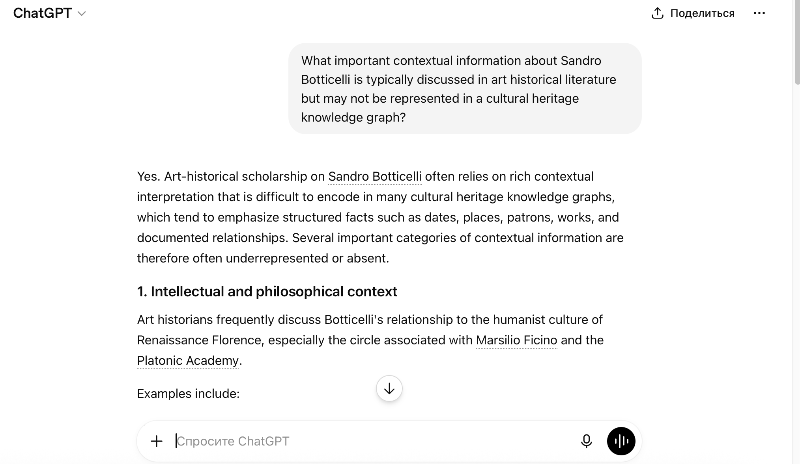
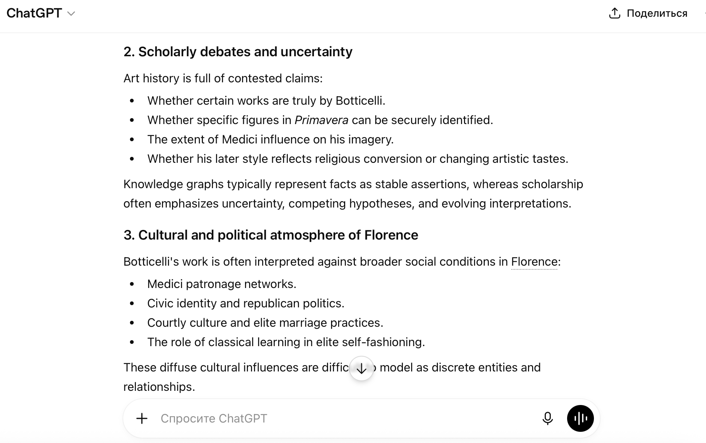
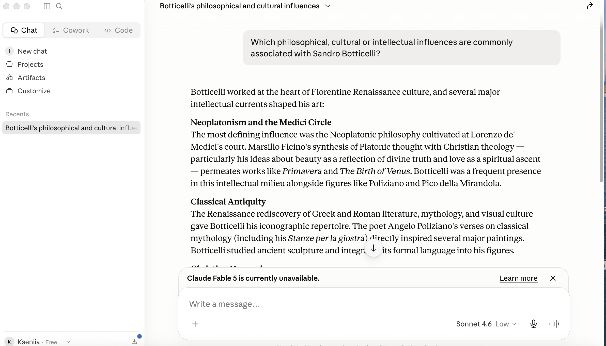
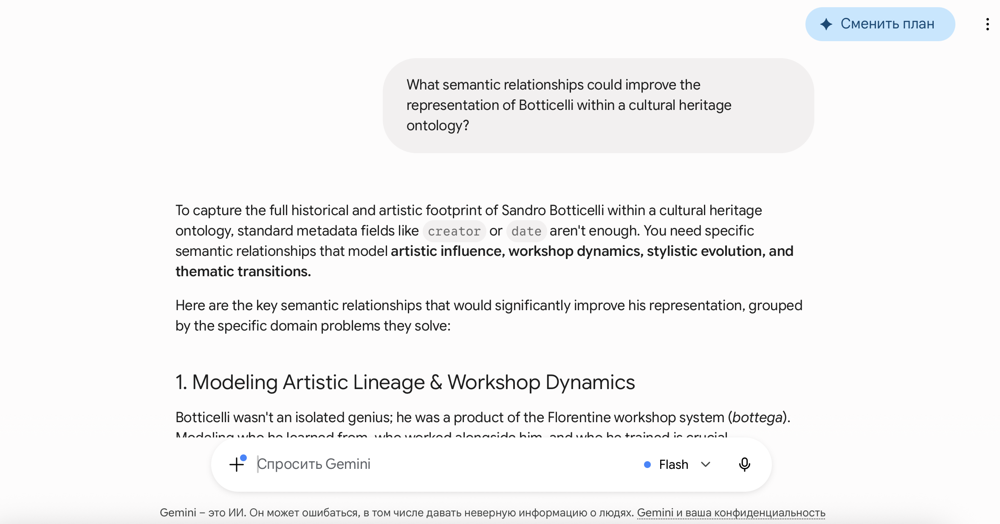
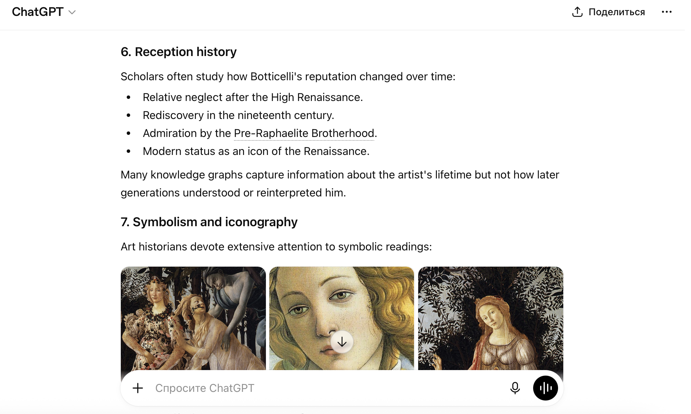
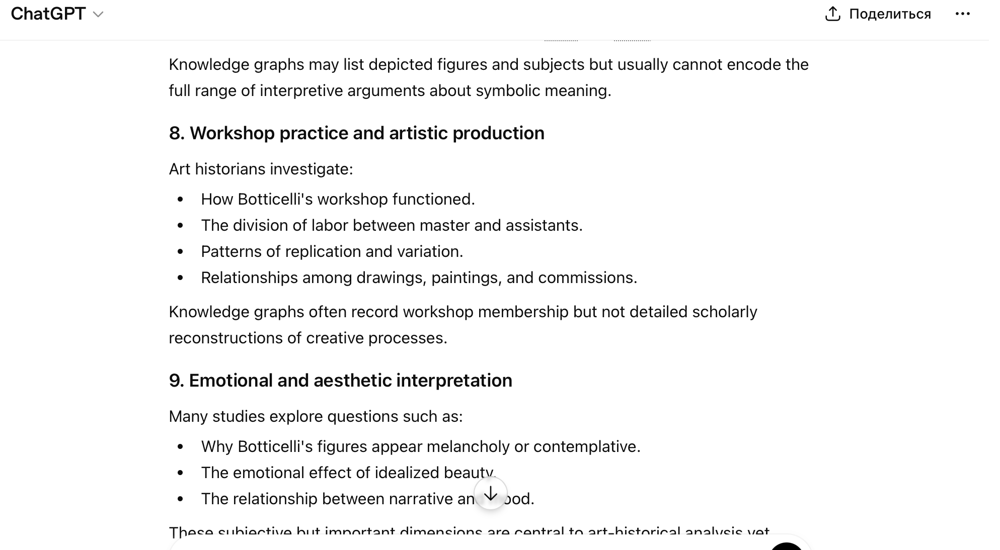
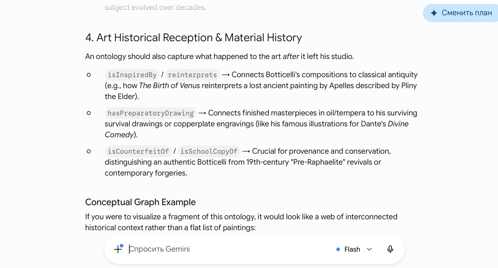

LLM Prompts and Model Comparison
This section documents the prompting techniques used in the project and compares responses from three language models. The KE4H course requires the use of three prompting techniques; all prompts relate to identifying knowledge gaps in the ArCo representation of Botticelli.
Technique 1 — Zero-shot prompting
A direct question without examples. The same prompt was submitted to ChatGPT, Claude and Gemini.
Prompt
What important contextual information about Sandro Botticelli is typically discussed in art historical literature but may not be represented in a cultural heritage knowledge graph such as ArCo?
ChatGPT — excerpt


Claude — excerpt

Gemini — excerpt


Technique 2 — Few-shot prompting
The same task, but the prompt includes examples of how contextual knowledge can be expressed in RDF using ArCo-style properties.
Prompt
ArCo can represent the subject of a painting with
a-cd:hasSubject. Example:ex:TondoDoni a-cd:hasSubject ex:SacraFamiglia . ex:SacraFamiglia a a-cd:Subject ; rdfs:label "Holy Family"@en .Considering Sandro Botticelli and the painting "Madonna con Bambino, San Giovannino e angeli", what contextual or philosophical information discussed in art history is missing from such a representation? Suggest subjects that could be linked with
a-cd:hasSubject.
Responses


Technique 3 — Chain-of-thought prompting
The model is asked to reason step by step before proposing enrichment candidates.
Prompt
Analyse step by step:
- What does ArCo typically represent for a Renaissance painting (catalogue metadata, subjects, agents)?
- What does art historical literature say about Botticelli's intellectual context?
- What is likely missing from ArCo's structured RDF?
- Which single enrichment would add the most value using existing ArCo properties?
Explain your reasoning at each step, then give a final recommendation.
Responses




Additional prompts (zero-shot variants)
- Which philosophical, cultural or intellectual influences are commonly associated with Sandro Botticelli?
- What semantic relationships could improve the representation of Botticelli within a cultural heritage ontology?

Comparison of LLM behaviour
| LLM | Style | Recurring themes |
|---|---|---|
| ChatGPT | Structured lists, broad coverage | Neoplatonism, Humanism, Medici patronage |
| Claude | Cautious, source-oriented phrasing | Philosophical milieu, symbolism, social context |
| Gemini | Emphasis on interpretation of specific works | Mythology, Primavera/Venus readings, philosophy |
Observation: Few-shot prompts produced suggestions closer to ArCo modelling
(hasSubject, typed Subject resources). Chain-of-thought responses were longer
but helped justify Neoplatonism as the primary enrichment candidate. All outputs required
verification against SPARQL results and scholarly sources.